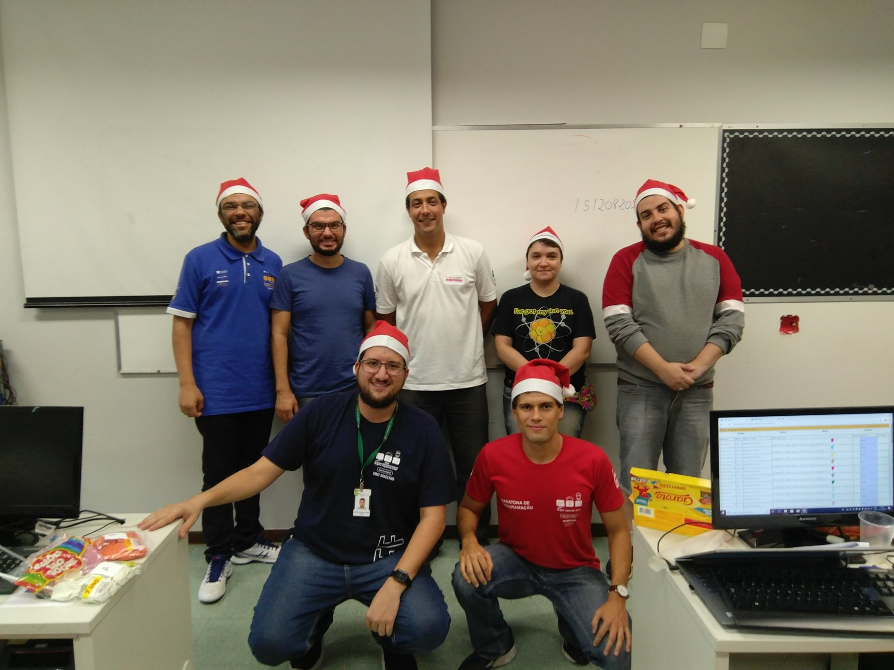

Retrospectiva 2019
Maratonas DF
6 Eventos
IV Maratona de Programação do IFB

27/04/2019
Seletiva UnB 2019
18/05/2019
III Maratona IESB de Programação

26/06/2019
VII Maratona UnB de Programação
23/09/2019
V Maratona de Programação do IFB

26/10/2019
II Maratona de Natal do IESB

07/12/2019
315 equipes
Mais de 700 participantes
Arthur Komatsu
Bruno Ribas
Daniel Saad
Edson Alves
Jeremias Gomes
John Gardenghi
José Leite
Lucas Mattioli
Patricia Moscariello
Pedro Ferreira
Rodrigo Guimarães
Sinayra Moreira
Vinícius Borges
XXIV Maratona SBC
1° Fase: DF
4 Escolas:
- IESB
- IFB
- UnB
- UnB/FGA
2 equipes classificadas para 2° fase:
- [UnB] Rock Lee do Pagode Namora D+
- [UnB/FGA] Caminhoneiros do Cerrado
2° Fase: nacional
Classificação para o mundial: [UnB] Rock Lee do Pagode Namora D+
4° lugar: medalha de prata!
Boas Festas
